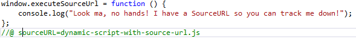

Adding Source URLs is a clever way of ensuring you can put breakpoints in dynamic scripts. If you look at the current source of this page dynamic-script-with-source-url.js is not present. Nor is dynamic-script-no-source-url.js. Clicking the button below will dynamically load them into the page. They still will not show under the source. However, if you add a source URL they will show up under a specialised category called "no domain".
The two example scripts I have injected the following functions onto the window: window.executeNoSourceUrl and window.executeSourceUrl. executeSourceUrl will have a source URL and will show under the "no domain" area once the demo has been run.
Where this is useful is for libraries\frameworks that attempt to do clever things when managing content (e.g. Kendo UI Tab Control) and for any sort of product that has it's own implementation of scripts on demand - i.e. document.ready isn't enough to say the page is fully loaded.
Source URLs are done in the following format:

Note: You will need to have the WebAPI running to load the scripts. This demo also uses eval to arbitrarily execute whatever JavaScript is returned from the server. Don't use this function without fully understanding what it does - it's generally pretty evil.